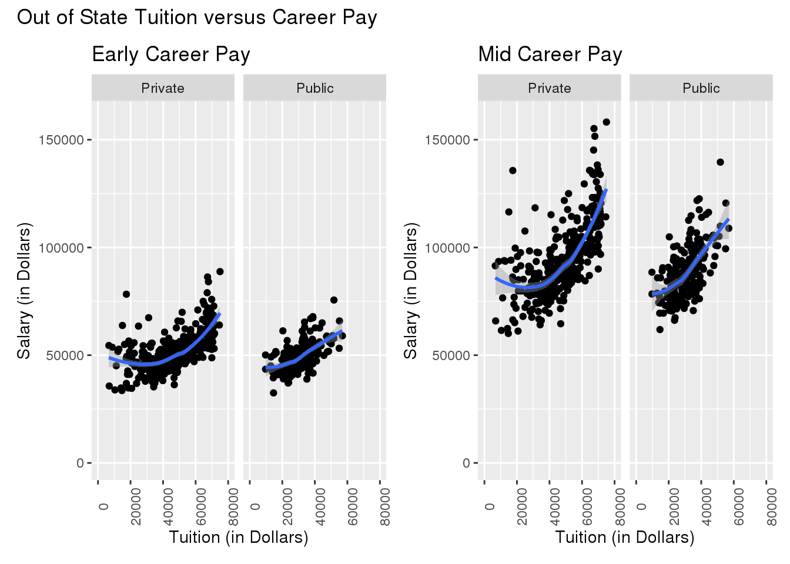
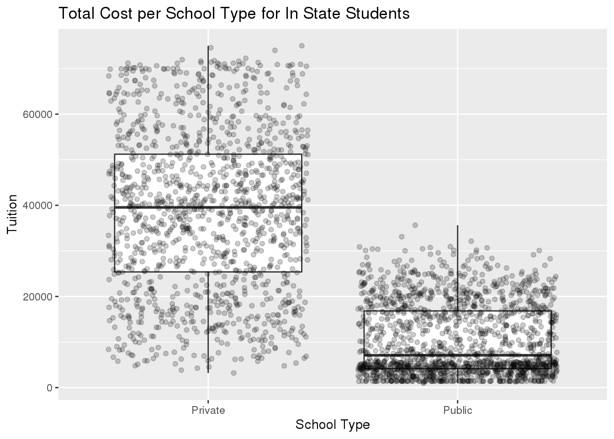
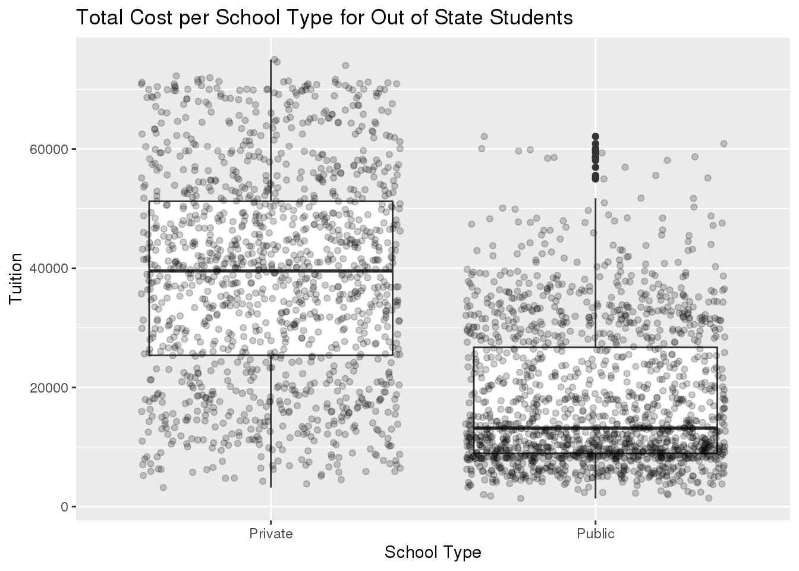
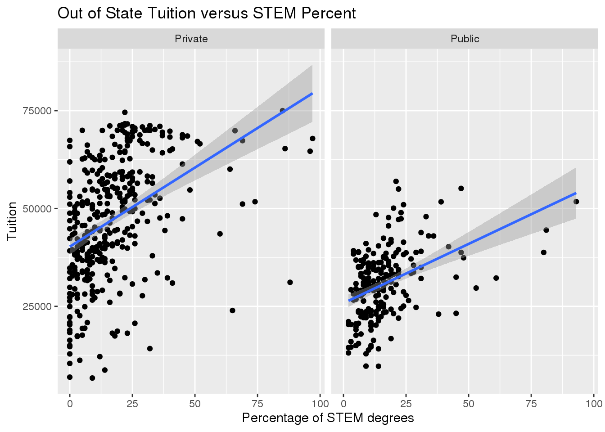

College Tuition Data Exploration
Introduction
This data is Tidytuesday Data from github. However, this specific data came originally came from the U.S. Department of Education. The tuition data came from TuitionTracker.org and the salary data comes from Payscale.com. Overall this data breaks down colleges and their costs while also looking at the type of institution, degree length, and salary potential. For this data I want to explore what impacts the cost of a college and the if college truly counts as an investment. To test these hypotheses I have formulate a few specific questions to test:
Is expensive tuition worth the investment?
Is private school actually more expensive?
Does STEM make schools more expensive?
Exploratory Data Analysis
To explore the data I looked at all the data sets and narrowed down the two that I will be using to answer my questions. The two data sets are tuition_cost and salary_potential. First looking at the tuition_cost data. This data set has 2,973 observations with 10 variables. The name variable gives the name of the college or university. The state that the college is located in is found either by name in the state variable or by the two letter abbreviation in the state_code variable. The type variable describes the type of college as either Public, Private, or For Profit. For profit refers to schools that sell education for profit. Because most of the trends I am concerned just relate to public versus private I will filter out these schools. The degree_length variable classifies each as either a 2 or 4 year degree. The room_and_board variable gives the cost in dollars for room and board. Then the in_state_tuition and out_of_state_tuition gives the price in dollars for tuition. The in_state_total and out_of_state_total variables give the total cost of tuition by adding the respective tuition to the room and board variable. The next data set that I will be using is the salary_potential.csv data. This data has 935 observations and 7 variables. The name variable gives the name of the school. The state_name variable gives the name of the state that the college is in and the rank variable gives the ranking for each school within their state. The early_career_pay variable gives the median salary (in dollars) for alumni with 0-5 years of experience. The mid_career_pay variable gives the median salary (in dollars) for alumni with 10 or more years of experience. The make_world_better_percent variable tells the percentage of alumni that say that their work makes the world a better place. Finally the stem_percent variable gives the percentage of degrees awarded in STEM fields.
While exploring these data sets I noticed that there is a split between the total cost and tuition rates in the tuition_cost data. The total cost gives the tuition plus the expenses for room and board. Another key fact about the data set is the fact that it gives different values for in state or out of state students. Consistently the cost for out of state students is higher than the cost for in state students. This trend can be shown in the figure below.
library(tidyverse)
library(ggplot2)
library(tidytuesdayR)
tuition_cost %>%
filter(type == "Private" | type == "Public") %>%
ggplot(aes(x = in_state_total, y = out_of_state_total)) +
geom_point() +
labs(x = "In State Total Cost(USD)", y = "Out of State Total Cost (USD)", title = "In State versus Out of State Total College Costs") +
facet_wrap(~type)As shown in the data visualizations for Public Colleges, the relationship between in state and out of state total costs is directly related, yet the spatial distribution also shows that in state tuition is always less expensive than the out of state costs for the same universities. Looking at the Private Colleges the linear relationship following the line y = x depicts the fact that for private colleges the in state and out of state costs were identical. This trend applies to all data points except for one. As seen in the one data point there is one private school that has different costs for in state and out of state students. Because the difference is between the in state and out of state tuition for this college is not vastly difference (the cost for attending as an out of state student is $5184 more), it is not an outlier and I do not think that it will greatly impact the results of my analyses, however it is important to note.
library(tidyverse)
library(tidytuesdayR)
tuition_cost %>%
filter(type == "Private") %>%
mutate(difference = (out_of_state_total - in_state_total)) %>%
filter(!difference == "0")## # A tibble: 1 x 11
## name state state_code type degree_length room_and_board in_state_tuition
## <chr> <chr> <chr> <chr> <chr> <dbl> <dbl>
## 1 Sali… Mont… MT Priv… 4 Year NA 6399
## # … with 4 more variables: in_state_total <dbl>, out_of_state_tuition <dbl>,
## # out_of_state_total <dbl>, difference <dbl>Data Analyses
For my data analysis I will be breaking this section up by question, taking a look at each one individually.
Question 1
Is expensive tuition worth the investment? To find this out I will analyze the relationship between tuition and salary potential. To see the relationship I will use data visualization (like scatter plots) too see the general trend while also using additional visualizations to see the relationship for certain types of colleges.
Because the salary potential data has less observations, I will use salary potential with a left join to tuition cost so that all there are not any ‘NA’ values. Because there are different values of tuition cost for in state versus out of state students I am going to do two analyses, 1 for each. I am choosing to do this because the value of tuition cost may change depending on whether or not the student receives in state or out of state tuition and I will also differentiate between early career pay and mid career pay.
As examined in the exploratory data analysis section, the cost of colleges depends greatly on whether or not the student is in-state or out of state and whether or not the student attends a public or private college. Because these options do significantly impact the cost of tuition they subsequently have a large impact on determining whether the investment is worth it.
salary_potential %>%
rename(state = state_name) %>%
left_join(tuition_cost, by = c("name", "state")) %>%
filter(!is.na(type)) %>%
ggplot(aes(x = in_state_total, y = early_career_pay)) +
geom_point() +
ggtitle("Instate Tuition Cost versus Early Salary Potential") +
labs(x = "Tuition Cost (in Dollars)", y = "Salary (in Dollars)") +
xlim(0, 80000) +
ylim(0, 160000) +
facet_wrap(~type)salary_potential %>%
rename(state = state_name) %>%
left_join(tuition_cost, by = c("name", "state")) %>%
filter(!is.na(type)) %>%
ggplot(aes(x = in_state_total, y = mid_career_pay)) +
geom_point() +
ggtitle("Instate Tuition versus Mid Career Pay") +
labs(x = "Tuition (in Dollars)", y = "Salary (in Dollars)") +
xlim(0, 80000) +
ylim(0, 160000) +
facet_wrap(~type)
salary_potential %>%
rename(state = state_name) %>%
left_join(tuition_cost, by = c("name", "state")) %>%
filter(!is.na(type)) %>%
ggplot(aes(x = out_of_state_total, y = early_career_pay)) +
geom_point() +
ggtitle("Out of State Tuition versus Early Career Pay") +
labs(x = "Tuition (in Dollars)", y = "Salary (in Dollars)") +
xlim(0, 80000) +
ylim(0, 160000) +
facet_wrap(~type)
salary_potential %>%
rename(state = state_name) %>%
left_join(tuition_cost, by = c("name", "state")) %>%
filter(!is.na(type)) %>%
ggplot(aes(x = out_of_state_total, y = mid_career_pay)) +
geom_point() +
ggtitle("Out of State Tuition versus Mid Career Pay") +
labs(x = "Tuition (in Dollars)", y = "Salary (in Dollars)") +
xlim(0, 80000) +
ylim(0, 160000) +
facet_wrap(~type)In conclusion, these visualizations show that expensive tuition may be worth the investment when looking at the results of salary potential. Consistently when the relationship between salary and tuition was evaluated the more expensive tuition lead to a higher salary. This result held true when broken down by in state or out of state, mid career or early career salary, and public versus private school.
Question 2
Private schools have a specific reputation: elitist and expensive. And while many private schools have become more welcoming over time a question remains: is private school actually more expensive? To do this I will compare calculate group-level statistics. Based on these statistics I will also create supportive visualizations like box plots.
For this analysis I will be using the tuition_cost.csv data.Because private school costs the same regardless of whether the attending student is a resident of that state or not (see exception below) I will also see if there is a difference in the result of private school being more expensive compared to in state or out of state tuition for public schools. I will divide the data between private and public school for total cost. There is one data point that must be noted, the Salish Kootenai College is the only private college in this data set that has different tuition rates for in state versus out of state students, as shown above. Because the comparison between private schools versus in state and private versus out of state tuition is calculated independently this data point will not skew the results. However it must be noted as different in terms of form.
## compare the mean and median for the cost of private versus in state tuition and out of state tuition totals
tuition_cost %>%
filter(type == "Private" | type == "Public") %>%
group_by(type) %>%
summarise(mean_in_state = mean(in_state_total), median_in_state = median(in_state_total), mean_out_state = mean(out_of_state_total), median_out_state = median(out_of_state_total))## # A tibble: 2 x 5
## type mean_in_state median_in_state mean_out_state median_out_state
## <chr> <dbl> <dbl> <dbl> <dbl>
## 1 Private 38680. 39542 38684. 39542
## 2 Public 10394. 7098 17973. 13171## create a box plot visualization for this data
tuition_cost %>%
filter(type == "Private" | type == "Public") %>%
ggplot(aes(x = type, y = in_state_total)) +
geom_boxplot() +
labs(x = "School Type", y = "Tuition", title = "Total Cost per School Type for In State Students")
tuition_cost %>%
filter(type == "Private" | type == "Public") %>%
ggplot(aes(x = type, y = out_of_state_total)) +
geom_boxplot() +
labs(x = "School Type", y = "Tuition", title = "Total Cost per School Type for Out of State Students")
This analysis concludes that overall private colleges are more expensive than public colleges. This is supported by the group level statistics. At every facet, the private school statistics were more expensive than their public school counterparts. However an interesting trend occurs when looking at the box plots. The overlap shows that while the overall trend of private schools being more expensive holds true, there are cases in which certain public schools are more expensive than other private schools. For out of state schools, there are upper outliers in the public school distribution. One constraint in this analysis is the possibility of scholarships. The data is for the full cost of attendance and does not include any scholarships. Scholarships are awarded on an individual basis and therefore there could truly be more instances where private schools are less expensive than public schools when after scholarships are awarded.
Question 3
Does STEM make schools more expensive? I will test this by seeing if their is a relationship between higher tuition prices and schools that have a higher percentage of stem graduates. To do this I will break down the data into different groupings based on the percentage of STEM graduates and then calculate statistics of the tuition rates. I will also create faceted visualizations to help further analyze if the trends (if any) are altered by the type of college.
I will be using an inner join on the salary_potential and tuition_cost data frames because this comparison only works when I have data from both data sets. Because with an inner join still gives 593 observations I believe that it will still give an close representation to the true relationship between the percentage of stem and the cost of the college. The following scatter plots show the general relationship between the percentage of STEM degrees awarded and the tuition for the school (grouped by either in state or out of state).
salary_potential %>%
rename(state = state_name) %>%
inner_join(tuition_cost, by = c("name", "state")) %>%
ggplot(aes(x = stem_percent, y = in_state_total)) +
geom_point() +
geom_smooth(model = "lm") +
labs(x = "Percentage of STEM degrees", y = "Tuition", title = "In State Tuition versus STEM Percent") +
facet_wrap(~type)## Warning: Ignoring unknown parameters: modelsalary_potential %>%
rename(state = state_name) %>%
inner_join(tuition_cost, by = c("name", "state")) %>%
ggplot(aes(x = stem_percent, y = out_of_state_total)) +
geom_point() +
geom_smooth(model = "lm") +
labs(x = "Percentage of STEM degrees", y = "Tuition", title = "Out of State Tuition versus STEM Percent") +
facet_wrap(~type)## Warning: Ignoring unknown parameters: model
To further analyze this relationship I sectioned the data into 10 groups based on the STEM percents (the first group held colleges that had a STEM percent of 0-10, the next 10-20, and so on). Based on the comparisons between groups it is clear to see that up to a point, the higher STEM percentages means higher tuition. For public colleges once the STEM percentage reaches 30, the out of state tuition cost for colleges with higher STEM percentages are not higher and once the STEM percentage reaches 60, the in state tuition cost for colleges with higher STEM percentages are not higher. For private schools once the STEM percentage reaches seventy the tuition costs for colleges with higher STEM percentages actually decreases. While these numbers come from statistical analysis the trend line shows that while the slope line (the relation between tuition and percentage of STEM degrees) is very steep at the start, it does flatten out. While there are exceptions early in the data this is most likely due to the fact that there are colleges that are very expensive and specialize in non STEM degrees (such as art schools).
Conclusion
These analyses help to explain what characteristics make certain colleges more expensive than others. Overall based on the results of my studies it is clear to see that up to a point, STEM does make a college more expensive. Logically this makes sense as the equipment and infrastructure needed to support large amounts of STEM students is expensive. Another characteristic that makes schools more expensive is whether or not the school is public or private. Private colleges do not receive government funding so it is reasonable that they are more expensive. However one constraint in my analyses is the amount of data present. The data I used is a sample of the true population of colleges across the country. Additionally, college tuition prices change year to year so while the trends of these analyses may stay constant, the actual values will fluctuate, which could impact my results of private schools being more expensive than public schools.Although private schools on average appear to be more expensive than public schools, the other part of my analysis may justify it. Based on the visualization, it is clear to see that the more expensive schools tend to have their students receive higher salaries early and later on in their careers.
To further explore these trends, there are two routes. One would be to compare the results of my analyses across different years. Looking backwards and performing the same analyses in future years to see if the trends outlined above hold constant. Another route to take would be to look internationally. All of the data in this data was for the United States and it would be interesting to see if there are international trends across all colleges or if certain trends from the United States match other countries.